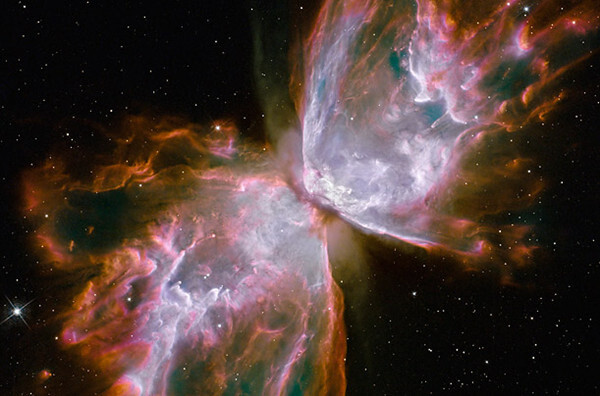

唯美星空
几多找寻，几多回首。
思你，在飘着花香的笔记本里，念你，在带着期盼的梦中。
关于星空摄影：
一般的天文摄影分为星野摄影和深空摄影两类。
根据平时的拍摄习惯，我们将其细分为四方面：
1.星野摄影（包括银河），
2.星轨摄影（包括合成星轨、B门星轨），
3.星象摄影（包括彗星、流星、月掩金星、国际空间站凌日凌月、日月食等），
4.深空摄影（包括星云、行星等）。其中，星轨摄影最被广大摄影人喜爱。
晴朗的夜晚，由于地球自转的原因，在我们北半球所看到的星星，都是围绕北极星转的，连续拍摄，就会形成星星的轨迹。
如果想把星轨拍成圆圈，必须把北极星纳入拍摄视野。
如果北极星在画面正中，则星轨是正圆；如果北极星在画面偏角，则星轨呈现偏圆。
如果北极星不在画面中，根据拍摄方向，则星轨可能会是半圆、斜弧线或上下星轨向中间挤压的蜂腰型线。
拍摄星轨，除了需要有广角镜头的相机外，三角架、快门线为必备。
星空虽美，拍摄星空却也着实辛苦！
必须天时地利人和！
需要天空乌云，天气通透，没有雾霾，还需要远离城市、远离光污染！！
让我们带着敬畏之心去看看大宇宙吧！！！
关于我们
关于我们 | 联系地址